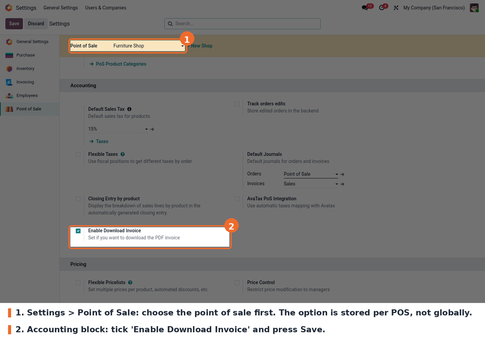
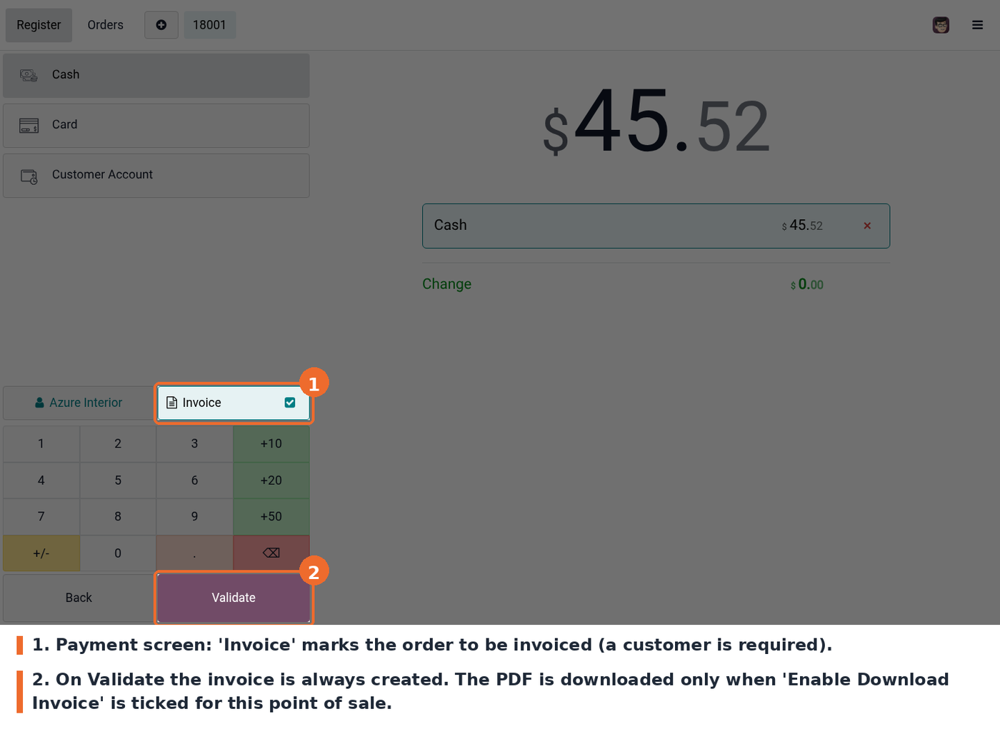

Out of the box, Odoo downloads the PDF invoice every time a Point of Sale order marked as Invoice is validated. On a shop counter that PDF is usually noise: the customer gets the printed receipt and the invoice is e-mailed or fetched later from the backend.
This module adds a single checkbox, Enable Download Invoice, to the Point of Sale settings. When it is off, the order is still invoiced exactly as before, only the PDF download is skipped. When it is on, Odoo keeps its standard behaviour and downloads the PDF. The option is stored on each point of sale, so one shop can download and another one not.
Go to Point of Sale > Configuration > Settings (or Settings > Point of Sale), pick the point of sale at the top of the page, scroll to the Accounting block and tick Enable Download Invoice. Press Save.
Notes about this setting:
Nothing changes for the cashier. Take an order, press Payment, choose a customer, leave the Invoice button active and validate. The invoice is created either way; the PDF download is what the setting controls. The same applies to the quick payment flow.
The checkbox lives in the Accounting block of the Point of Sale settings:

Enable Download Invoice checkbox in the Point of Sale settings, Accounting block
And this is the payment screen with the Invoice button active, right before validating the order:

POS payment screen with the Invoice button active, before validating the order
The setting only controls the download. The invoice itself is always created for orders marked as Invoice, and stays available in Accounting and in the customer portal.
static/description/icon.png weighs about 900 KB and is 1024x1024 pixels,
while Odoo core icons are 100x100. It should be replaced by a properly sized
icon.